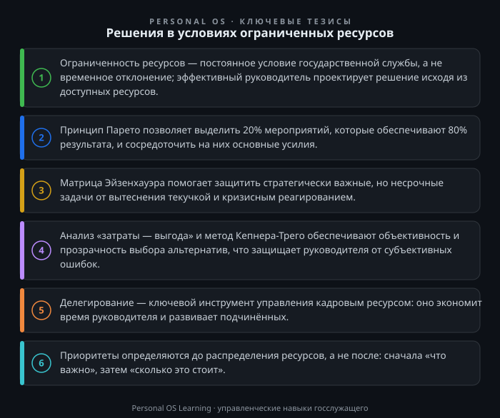

Каждый государственный служащий, принимающий управленческие решения, рано или поздно сталкивается с жёсткой реальностью: ресурсы всегда ограничены. Бюджет утверждён и пересмотру не подлежит, штатная численность зафиксирована, время — единственный невосполнимый ресурс, а объём задач при этом не уменьшается. Более того, в условиях внешнего давления, санкционных ограничений и необходимости достижения национальных целей развития дефицит ресурсов становится хроническим состоянием, а не временным отклонением.
Умение принимать эффективные решения в таких условиях — это не просто компетенция, а профессиональное требование. Ошибочное решение в коммерческом секторе приводит к убыткам компании. Ошибочное решение на государственной службе — к невыполнению государственной функции, срыву социальных обязательств, потере доверия граждан. Цена ошибки многократно возрастает.
В этой статье мы разберём, что означает «ограниченность ресурсов» в контексте государственного управления, какие инструменты позволяют принимать качественные решения при дефиците бюджета, времени и кадров, и как превратить ограничения из источника стресса в управляемый фактор.
Прежде чем говорить об инструментах, необходимо чётко определить, с какими видами ограничений сталкивается государственный служащий. Обычно выделяют четыре ключевые группы.
Финансовые ограничения. Бюджетные средства распределяются на трёхлетний период, и возможности манёвра ограничены. Государственный служащий не может просто «выбить» дополнительные средства — для этого требуется изменение бюджетных ассигнований, прохождение процедур, согласований. В соответствии с Бюджетным кодексом Российской Федерации Бюджетный кодекс Российской Федерации бюджетные средства имеют строго целевое назначение, и их перераспределение — это сложная юридическая процедура.
Временные ограничения. Поручения вышестоящего руководства, сроки предоставления отчётности, законодательно установленные сроки оказания государственных услуг — всё это создаёт жёсткие временные рамки. В отличие от бюджета, время нельзя «продлить» или «перенести».
Кадровые ограничения. Штатная численность государственных органов утверждается вышестоящим органом. Принять «ещё одного специалиста» по собственной инициативе невозможно. При этом текучесть кадров, высокая нагрузка, необходимость обучения — всё это влияет на доступность человеческих ресурсов.
Информационные ограничения. Часто решения приходится принимать в условиях неполноты данных. Статистика запаздывает, межведомственное взаимодействие требует времени, а решение нужно уже сейчас.
Ключевой вывод: ограничения — это не препятствие, а условие задачи. Как инженер проектирует мост с учётом свойств материалов, так и государственный служащий должен проектировать решение с учётом доступных ресурсов. Задача не в том, чтобы «найти ресурсы», а в том, чтобы в рамках существующих ограничений найти наилучшее решение.
Принцип Парето, известный также как «правило 80/20», гласит: примерно 80% результатов достигается за счёт 20% усилий. Применительно к государственному управлению это означает, что не все задачи и функции равнозначны. Часть мероприятий даёт основной вклад в достижение ключевых показателей, остальные — лишь незначительный.
Как применять этот принцип на практике? Возьмите план работы вашего отдела на квартал и задайте себе три вопроса:
Например, отдел, отвечающий за лицензирование, может обнаружить, что 80% обращений граждан касается пяти видов лицензий из сорока. Сосредоточив основные усилия на оптимизации процессов по этим пяти видам (сокращение сроков, улучшение информирования), отдел достигнет значительно большего эффекта, чем пытаясь «улучшить всё сразу».
Практическое правило: при возникновении дефицита ресурсов в первую очередь защищаются мероприятия, которые (а) обязательны по закону, (б) обеспечивают достижение ключевых показателей, (в) имеют публичный резонанс и влияют на доверие граждан. Всё остальное — кандидаты на сокращение или отсрочку.
Для государственного служащего время — самый дефицитный ресурс, поскольку его нельзя аккумулировать или заменить. Матрица Эйзенхауэра — классический инструмент приоритизации, который в государственной службе приобретает особую значимость.
Матрица делит все задачи на четыре категории:
Важные и срочные. Это кризисные ситуации, срочные поручения руководства, инциденты, требующие немедленного реагирования. Такие задачи выполняются в первую очередь. Однако если этот квадрант переполнен, значит, организация хронически живёт в режиме «пожарной команды».
Важные, но не срочные. Это стратегическое планирование, развитие подчинённых, совершенствование процессов, профилактика рисков. Именно этому квадранту следует уделять основное внимание, но именно он чаще всего страдает при дефиците времени.
Срочные, но не важные. Это часть переписки, непрофильные совещания, отвлечения. Такие задачи следует делегировать или минимизировать.
Не срочные и не важные. Это то, что можно исключить без потерь.
Типичная ошибка государственного служащего — тратить время на срочные, но не важные задачи, потому что они «горят». Например, подготовка бесконечных справок и презентаций для вышестоящих органов, которые не используются в работе, отнимает часы, которые могли быть потрачены на анализ и совершенствование реальных процессов.
Рекомендация: в начале каждой недели выделите 15 минут и распределите задачи на неделю по матрице. Поставьте себе цель, чтобы не менее 40% времени уходило на важные, но не срочные задачи. Если вы не управляете своим временем, им управляет кто-то другой.
Когда ресурсы ограничены, каждый рубль и каждый час должны работать с максимальной отдачей. Для этого необходим систематический подход к сравнению альтернатив.
Анализ «затраты — выгода» позволяет оценить, какие результаты принесёт решение относительно затраченных ресурсов. В государственном секторе этот анализ имеет особенности: выгода не всегда выражается в деньгах. Это может быть социальный эффект, улучшение качества жизни граждан, снижение административной нагрузки на бизнес.
Простой практический алгоритм:
Метод Кепнера-Трего — более сложный инструмент для принятия решений, когда необходимо сравнить несколько вариантов по множеству критериев. Суть метода: вы определяете обязательные критерии (без которых решение невозможно) и желательные критерии (которые повышают качество решения), присваиваете желательным критериям веса, оцениваете каждый вариант и выбираете тот, который набрал максимальное количество баллов.
Пример из практики: перед руководителем стоит задача выбрать подрядчика для разработки информационной системы. Обязательные критерии: наличие лицензии, опыт работы с государственными заказчиками, соответствие требованиям импортозамещения. Желательные критерии: цена (вес 5), сроки (вес 4), количество специалистов в штате (вес 3), наличие референсов (вес 2). Оценив каждого претендента по пятибалльной шкале, руководитель получает объективную картину, которая защищает его от субъективных предпочтений и обвинений в необоснованном выборе.
В условиях кадрового дефицита часто возникает соблазн «взять всё на себя». Это стратегическая ошибка. Руководитель, который не делегирует, становится узким местом всей системы: скорость принятия решений падает, сотрудники не развиваются, а сам руководитель быстро выгорает.
Эффективное делегирование в государственном органе — это не просто передача задач. Это:
Чёткая постановка задачи. Сотрудник должен понимать, какой результат ожидается, в какие сроки и с какими ресурсами. Размытое поручение — это гарантия размытого результата.
Передача полномочий. Сотрудник должен иметь право запрашивать информацию, согласовывать документы, взаимодействовать с другими отделами в рамках поставленной задачи. Иначе он будет бегать за каждым согласованием к руководителю.
Контроль, а не надзор. Важно контролировать ключевые точки, а не каждый шаг сотрудника. Контроль должен быть системным, а не тотальным.
Обратная связь. После завершения задачи необходимо обсудить, что получилось, а что можно улучшить. Это превращает делегирование в инструмент развития кадров.
Особенно важно это в контексте Федерального закона «О государственной гражданской службе Российской Федерации» Федеральный закон «О государственной гражданской службе Российской Федерации», который предусматривает оценку профессиональной служебной деятельности государственных служащих. Развивая сотрудников через делегирование, руководитель одновременно повышает показатели своего подразделения.
Предлагаю вам выполнить три задания, которые займут не более 30 минут каждое, но дадут немедленный практический результат.
Задание 1. Парето-анализ вашего отдела. Возьмите план работы вашего отдела на текущий квартал. Выпишите все мероприятия. Напротив каждого укажите: (а) какой показатель достигнется, (б) является ли мероприятие обязательным по закону или прямому поручению, (в) сколько времени и средств оно требует. Определите 20% мероприятий, которые дают 80% результата. Составьте список «защищаемых» мероприятий — тех, которые вы будете выполнять в первую очередь при дефиците ресурсов.
Задание 2. Матрица Эйзенхауэра на неделю. Возьмите список ваших текущих задач. Распределите их по четырём квадрантам матрицы. Определите, какие задачи из квадранта «срочные, но не важные» вы можете делегировать или минимизировать. Какие задачи из квадранта «важные, но не срочные» вы давно откладываете? Запланируйте на следующую неделю конкретное время для этих задач.
Задание 3. Применение метода Кепнера-Трего. Выберите реальное решение, которое вам предстоит принять в ближайшее время (выбор подрядчика, выбор информационной системы, распределение премиального фонда). Сформулируйте 3-4 обязательных критерия и 4-5 желательных критериев. Присвойте желательным критериям веса. Оцените 2-3 альтернативы. Вы увидите, что решение становится более прозрачным и обоснованным — это защитит вас и от собственных сомнений, и от внешней критики.
Ограниченность ресурсов — это не временная трудность, а постоянное условие работы государственного служащего. Умение принимать решения в таких условиях — это не «искусство выживания», а системная компетенция, основанная на чётких приоритетах, аналитических инструментах и эффективной работе с командой.
Главный принцип: сначала определите, что действительно важно, а затем распределяйте ресурсы в соответствии с этими приоритетами, а не наоборот. Инструменты, описанные в статье — Парето-анализ, матрица Эйзенхауэра, анализ «затраты — выгода», метод Кепнера-Трего, делегирование — помогут вам принимать взвешенные решения даже в самых жёстких условиях.
Помните: решения в условиях ограниченных ресурсов принимает тот, кто умеет видеть главное и отказываться от второстепенного. Это качество отличает зрелого руководителя от исполнителя, который просто реагирует на обстоятельства.

Открыть инфографику в полном размере ↗